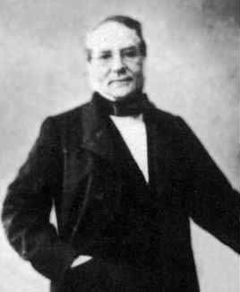

1796–1878
French
Probability, statistics
Irénée-Jules Bienaymé was born in Paris and educated at the École Polytechnique, after which he entered the civil service as a statistician in the Ministry of Finance. He spent most of his career outside the university system, working as a government actuary and statistician, which gave his mathematics a distinctly applied flavour.
Bienaymé’s most important result — that $P(|X - \mu| \geq k\sigma) \leq 1/k^2$ — was proved in 1853, a full fourteen years before Chebyshev published his version in 1867. The result is sometimes called the Bienaymé–Chebyshev inequality, though Chebyshev’s name appears far more often in textbooks. The priority question is clear: Bienaymé was first, but Chebyshev’s proof was more general and more widely circulated.
Bienaymé also anticipated the theory of branching processes. In 1845, he studied the question of whether family surnames would eventually die out, formulating it as a probability problem about the extinction of lineages. Galton and Watson posed the same problem independently in 1874, and the resulting theory is now called the Galton–Watson process, though “Bienaymé–Galton–Watson” is the more historically accurate name.
He was elected to the Académie des Sciences in 1852 and engaged in vigorous debates about the foundations of probability with Cauchy, Poisson, and others. His insistence on rigour in statistical reasoning was ahead of its time. He died in Paris in 1878, largely forgotten until historians of probability restored his priority in the 20th century.
| Phase | Page | Referenced for |
|---|---|---|
| Phase 12 | Markov and Chebyshev Inequalities | Proved an equivalent of Chebyshev’s inequality in 1853, fourteen years before Chebyshev |